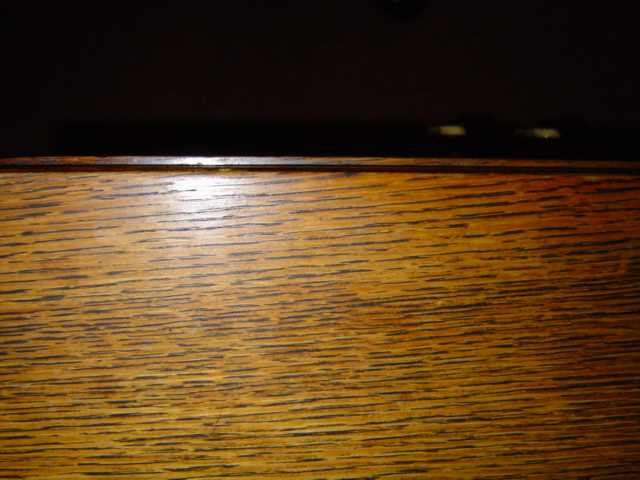
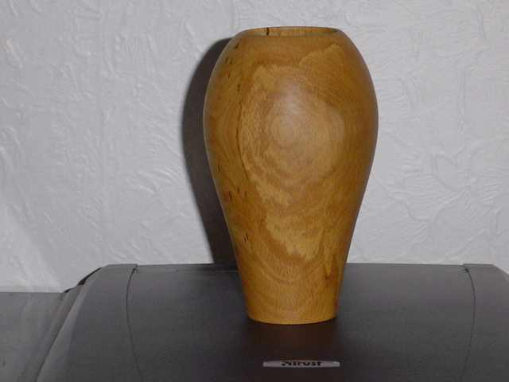
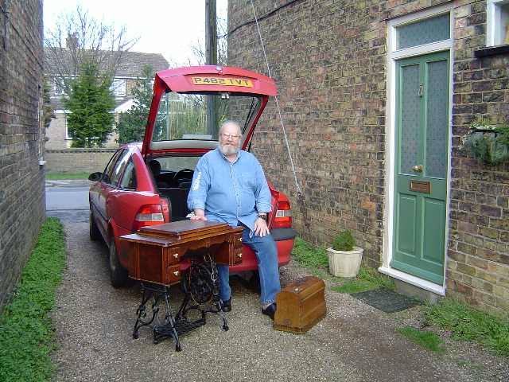

Chapter 3 – TOOLS & MATERIALS FOR RESTORATION
Hello again, sewing machine people, and welcome once more to the Needlebar pages on sewing machine restoration. In this article, I’m going to be talking about some of the tools and materials that we will be using as we restore the machines in our collections. We will also take a look at the skills that are desirable if we are going to be able to produce good quality work (don’t worry – most of these are easily learned) and the workshop facilities – or lack of them – that we will be working in. Firstly, however, let’s talk about wood. This is a bit lengthy, but it’s important to have at least a basic understanding of the material that we will be working with.
THE PROPERTIES OF WOOD -
No – I don’t mean wooden houses - I mean the attributes of the stuff and how it behaves – or misbehaves – under various conditions.
“Wood is a living material!” How many times have you heard that old chestnut (if you’ll pardon the pun)? Complete and utter rubbish! Not only is wood dead once the tree’s been chopped down, most of it’s dead whilst the thing’s still growing! The only part of a tree that’s ever actually alive (apart from the leaves and this year’s new shoots) is a thin layer of cells, just behind the bark, called the cambium. The cambium layer sub-divides each year, the outer cells forming the bast or phloem (inner bark), which conducts the tree’s food – but is dying, and will shortly become the new outer bark (dead). Towards the inside of the tree, the sub-division of the cambium forms the next annual ring of sapwood, which conducts moisture and stores nutrients - but is actually dead.
So why do some people describe wood as “a living material”? Well I suppose it’s because it moves and changes shape, swelling and contracting even hundreds of years after it has been made into a piece of furniture. This movement is caused by the pores of the wood taking in, or giving out, moisture, in a similar manner to a sponge (which is also dead!). If you put a sponge into a bowl of water, it’ll absorb water until the moisture level inside it is the same as that in its surroundings. Likewise, if we take our now saturated sponge out of the bath, it’ll release water until the balance with its surroundings is again achieved. Wood does exactly the same thing with the moisture in the air. This is often referred to as the wood “breathing”.
People talk about “feeding” wood with (say) oils or wax. Well you can’t feed it for the same reason that it can’t breath – it’s dead! What oil, wax or various other finishes actually do is to seal the pores, thus reducing the wood’s ability to absorb or exude moisture. Finishes also help prevent airborne fungal organisms from entering the wood and causing it to deteriorate. It should be understood at this point that wood doesn’t just deteriorate or decay all by itself – rot is the result of the wood fibres being eaten by a fungus – thus, no fungus, no deterioration.
Wood has a grain, and this is what makes it more complicated to work with than just about any other material. Those pores that we’ve been talking about are actually tiny tubes - millions of them - that carry moisture and nutrients up the tree by capillary action. They obviously all run in the same direction (i.e., up - no more clues) and are what form the grain of the wood. Any piece of wood is simply a bundle of these tubes, and the direction in which the tubes (i.e., the grain) are running is the single most important factor when we’re deciding how to work with a particular piece of timber.
Let’s try to make this a bit easier to visualise. Imagine holding a bundle of drinking straws in your hand. If you take a thin, blunt blade in your other hand and press it against the top of the bundle, it’ll easily slide down between the straws, splitting the bundle. If, however, you press your blade against the side of the bundle, it’ll go nowhere. Pressing harder will cause the straws to crush – but the blade still won’t go through them. The only way to cut through the straws from the side is to use either a very sharp blade or a saw. Wood behaves in exactly the same way; place the bluntest of blades on the end of the grain and hit it – the wood will split easily along its grain. Push the blade against the side of the grain as hard as you like; the wood will only crush unless the blade is very sharp indeed (or a saw is used).
A BASIC LAW OF WOODWORKING: - The time when wood is most likely to split along its grain is when you really didn’t want it to!
At this point, it would be worth mentioning the relationship between the grain of the wood and the way in which moisture causes it to swell. Wood reacts to moisture the same way that we react to meat and potato pies, i.e., we get wider but we don’t get any longer. Thus -
ANOTHER BASIC LAW OF WOODWORKING: - Wood swells and contracts across the grain. Changes in moisture make only a miniscule difference to the length (along the grain) of a piece of wood, but the effect on the width (across the grain) can be considerable.
Don’t underrate the ability of wood’s to absorb moisture. A growing tree is quite likely to be 50% water by weight. The wood in your furniture will be around 8-12% water (depending on the temperature and humidity in your house). It’s quite capable of absorbing water ‘till it gets back to the level it held when it was growing.
“So what’s all this got to do with sewing machines?” I hear the masses howling! Well, quite a lot, especially when we start to look at some of the peculiar things that veneer will do on treadle stands. Veneer is wood with a grain, just the same as any other wood – and it reacts to moisture changes in exactly the same way. If you just remember that ALL wood swells and contracts across the grain and not along it, you’ll be halfway to understanding and solving the sorts of problem that we’ll be dealing with later in this series.
There’s just one final thing that we need to mention before leaving the subject of wood, and that is –
CUTTING WOOD THE WAY IT WANTS TO BE CUT –
This is one of the most important things for you to understand, because if you don’t humour the wood, it’ll soon let you know, and show its disgust by ruining the appearance of your work!
“But I’ve no intention of cutting any wood” I hear you wail, “I just want to improve the appearance of my sewing machines!” Oh that life could be so simple! “Cutting wood” doesn’t necessarily mean setting about it with saws and chisels; whenever you are scraping off an old finish, sanding the wood with abrasive paper or even rubbing the surface with wire wool, you are cutting wood, and if you don’t do it right – it’ll show. Get it wrong with veneer, and it’ll really show – and break your heart in the process!
Life could be so sweet if only every piece of wood had a dead-straight grain that ran exactly parallel to the outside edge. The reality is that the grain more often than not has a slightly wavy shape (the degree of which is dependant on the variety of tree and the conditions in which it grew). Those guys at the sawmill are paid by the ton of wood cut, so they aren’t going to spend too much time checking that the grain is exactly aligned with their saw-blade when they convert a tree trunk into boards for sale.
So how does the wood like to be cut? Well, if we’re cutting across the grain with a saw, it doesn’t really make a great deal of difference how we do it, but most of the time we’ll be working (smoothing) the surface in line with the grain.
We’ve already said that the grain will rarely be exactly parallel with this edge; it will usually be running slightly diagonally, at a very shallow angle. The picture of part of a 1937 Singer cabinet shows this quite well.

The (English oak) grain is clearly visible and you can see that, all the way along the side of the wood, there are the ends of these grain “tubes”, lying much like the hairs on the back of a smooth-coated dog. Now we all know what happens when we stroke a dog: if we stroke from head to tail, the hair stays flat and the animal enjoys it, but if we stroke in the other direction, the animal’s coat looks very ruffled and the critter is not impressed! Well, wood’s just the same. If we were to run a sharp blade down the edge of the wood in the direction in which the grain is laying (left to right in the picture), we’ll take a nice clean shaving with very little effort, leaving a smooth finish (the wood’s way of smiling) on the surface. If, however, we try to take a shaving in the other direction (right to left in the picture), the blade will chatter along the surface of the wood as it digs into the ends of the grain and instead of a nice smooth finish, we’ll have lots of little craters where we’ve dug lumps out of the surface.
Most of the other things that you’ll need to know about the behaviour of wood, we can mention when the time arrives during our restoration projects. I will, however, just dispel one more myth.
There are two types of wood, known as “hardwood” and “softwood”, all species fitting into one or the other category. So “hardwood” is hard and “softwood” is soft - right? ……… Wrong! The two titles have little to do with the hardness of the wood.
There are two types of tree – those with broad leaves that (usually) drop off in the autumn (fall) and those with needle-shaped leaves that (usually) don’t drop off. The former are “hardwoods”, and include oak, ash and elm, which are pretty hard; mahogany, which can be anything from very hard (Cuban) to pretty soft (Brazilian), and balsa, which is about as tough as a wet newspaper. The trees with needle-shaped leaves are “softwoods” and include fir and pine, which are pretty soft, spruce, which can be fairly hard, and yew, which is harder than most “hardwoods”. Hey! - I don’t make the rules, I’m just telling you how the song goes!
TOOLS FOR RESTORATION –
We can keep this pretty simple. You will need a small selection of flat-bladed screwdrivers of various lengths and widths. If you buy them as you need them, you’ll not waste money on ones you’ll never use. A reasonable size of adjustable spanner (wrench) may also prove useful – one about 8 inches (200 mm) long will do nicely.
You’ll need a selection of abrasive cloths or papers. I mainly use a cloth-backed, aluminium oxide type known as “J-flex”, but you can take your pick from the millions of types available. Get a selection of different “grits”– I would suggest that 180, 240, 320 and 400 grit would cover all of our needs. Those numbers represent the coarseness of the abrasive: the bigger the number, the finer the grit – thus 400 grit will give the smoothest finish whilst 180 grit will remove a lot of wood very quickly (if you’re not careful!). I would also recommend buying ones with a soft cloth backing rather than paper, because they’re less likely to put scratches were you don’t want them.
There’s a good reason for not wanting to sand away the surface of the wood unless we’re forced to. Over time, wood develops a “patina”. This is a change of colour that occurs on the surface of the wood and is caused by the action of sunlight. It gives the wood that mellow appearance which separates the antique from the starkness of a newly made object. As a general rule, light coloured woods become darker and dark woods become lighter. 
The picture shows a vase I made, possibly a couple of years or so ago, from beech that was almost paper white. Look at the colour now, after two years in our conservatory. What colour will it be in 100 years time? The patina is only on the surface. If I were to cut away four or five thousandths of an inch of the wood (easily done with abrasive paper), it would be white again. Lesson: – don’t go mad with the abrasives! Sometimes we’ll have to abrade through the patina – but we’ll avoid it where we can.
The thing we’ll use more than anything else is steel wool (wire wool). The version you’ll all have seen is the stuff your plumber uses to clean copper pipes before he solders fittings into place. This is “medium”, or grade 1 and we’re unlikely to have much use for it in our restorative exploits. It does, however, have a coarse cousin (haven’t we all?), which can be very handy for helping us to removing old shellac from woodwork, or paint from treadle stands.
ETHICAL CONSIDERATIONS - At this point I would comment that I consider the removal of the original paint from treadle stands to be “a restoration too far” in the vast majority of cases. I’ve only done it once: on a fairly rare 1890s “Vertical Feed Sewing Machine Company of London” machine, (the British version of the Davis Vertical Feed) which had been heavily modified at some time in its past. This restoration necessitated me having to extensively fabricate new metal parts for the stand, to replace the original parts that had been disposed of during the modifications. In addition, the original paint on the stand was completely rotten and was crumbling away as powder. I personally consider that most iron stands, even if 50% of the original paint is missing, look better just cleaned and polished up than repainted. However, I accept that not everyone will share my opinions; so later on in this series of articles I will cover the subject of how to repaint a stand without it looking as though you’ve just done it.
Back to wire wool. “Coarse” wire wool is grades 2 or 4 (4 being the coarsest, but 2 will be just dandy for what we want to do), but the really useful stuff for us restorers is 0000 grade (said as “four noughts wire wool”). This is at the opposite end of the range from the coarse grades and it really is like cotton wool – so soft it’s hard to believe it’s made from steel. I get through tons of it! If you have a problem finding shops that sell 0000 (or 2, for that matter), try suppliers of wood finishes or companies selling equipment for wood-turners.
The only other items you’re going to need in the near future are a couple of scrapers – the type you use for removing old wall paper; some (cheap and cheerful) two inch (25 mm) paintbrushes for applying varnish stripper and some protective clothing; mainly eye-shields and thick, non-absorbent gloves – kitchen rubber gloves are OK but you can buy the proper heavy-duty items from builder’s supplies shops very cheaply indeed.
The two scrapers I use most are about an inch (25 mm) and about two inches (50 mm) wide – the exact size isn’t critical. These will require a modification: you will need to slightly round off the two corners to prevent them from digging into the veneer when you are stripping the old finish from our woodwork. Either grind them or file them, but make sure that the final result is very smooth so as not to scratch the wood. If you have neither a grinder nor a file, use some of your newly bought abrasive – it’ll be harder work but it’s important that we get rid of those sharp corners. It will also be worthwhile rubbing your abrasive all the way along the working edge to round it slightly and ensure there are no sharp bits. Check for smoothness with your fingers. If it feels smooth – it is.
There’s sure to be some other things that we’ll need, but I can’t think what they are at the moment, so I’ll mention them as the need arises.
MATERIALS FOR RESTORATION –
Again, we’re not going to need a lot to get us started but we will be adding to the list as we progress. At this point it’s worth mentioning that common, everyday items have different names in different countries. I’ll try to give the United Kingdom and American names, and assume that the rest of the English-speaking world uses one name or the other. For those of you for whom English is not the native tongue, I’m afraid you may have to decide for yourselves what the translation is.
So here’s your shopping list: -
Methylated spirits (America –
de-natured alcohol)
White spirits (America – mineral spirits)
Raw linseed oil (boiled linseed oil will do – but raw is better)
Vinegar (ordinary malt – the stuff for fish and chips!)
Paint/Varnish stripper
Pearl glue (also called Scotch/Hide/Animal – used hot)
French Polish (Button polish).
Now as soon as we use the term “French Polish”, we start to get into deep water, so I’ll try to clarify a few points - and destroy a few myths in the process.
French polishing is a process, not a material. The material used is shellac; a natural resin exuded by an insect found mainly on the Indian sub-continent, called the lac beetle. The shellac is dissolved in methylated spirits (de-natured alcohol) to create a lacquer. An item that has been “French polished” has had this lacquer applied in a particular way, i.e., by the French polishing process. Items that have been finished with the same material applied by a different technique have been “lacquered”, but are not “French polished”. Confused? You will be!
Lacquer made in this way was in use in this country (England) as far back as the early 17th century, but French polishing, using exactly the same material, didn’t appear in England until around 1815 (don’t let anyone tell you that Chippendale used French polish – he used shellac lacquer but he knew no more about French polish than it knew about him!).
The woodwork on our sewing machines is not French polished, but it is shellac lacquered. Pretty well any glossy wood finish applied pre-1950 (or thereabouts) will be shellac-based. We don’t know how the different versions of these finishes were applied by the different manufacturers, but sewing machines were being turned out by the million, so they definitely weren’t French polishing them, because it’s a slow process. It’s almost certain that the lacquer manufacturers would formulate shellac-based finishes to suit the processes favoured by the individual companies making woodwork for sewing machines – quite likely some sort of spraying process (don’t try spraying ordinary French polishing lacquer yourselves – I’ve tried it – half of it dries in the air between the spray-gun and the wood and the vapour is seriously explosive!).
There is a product on the market known as “Brushing French Polish”: a shellac lacquer that can be applied with a brush, but looks like French polish. I don’t want to bore you with a lengthy explanation as to why – but avoid it.
Stains were often used to make cheap woods look like mahogany, I have proved by my own experiments on the finishes of a great many sewing machines that the stains were always in the lacquer and were not applied to the wood first.
Because we don’t know the formulations or application methods used all those years ago – and if we did, would be most unlikely to be able to replicate them, we must aim to reproduce the original appearance as accurately as we can, using materials as similar as possible to the originals.
Whilst I have emphasised that French polishing is a process, the material used is nowadays sold as “French Polish” (?). You can buy the shellac flakes to dissolve in alcohol, but it’s more convenient to buy it made up and ready to use. It’s available in various colours, the main ones being Garnet (the darkest colour), Button, Orange and White. The Garnet is too dark for most of the items that we’ll be working on and the Orange is too orange to be of much use for anything! The most useful for us is the Button polish (darkish), although I do also buy White for mixing with Button if I need a slightly lighter finish (usually on late 1950s machines).
We will be applying the lacquer
by a process that is basically similar too – but a much-simplified version
of - French polishing. Don’t start reading books about French polishing;
they’ll frighten you to death! I’ll show you all you need to know
for our purposes. Trust me!
FACILITIES FOR RESTORATION –
I have a workshop measuring 24 feet by 20 feet that contains more machines and power tools than I can remember and more planes, chisels, saws, woodcarving gouges etc., etc., etc. than you could shake a stick at! Who’s a lucky boy, then? I’m very aware that some of you eager beavers will have nothing more than the kitchen table to work on. Don’t worry. For most of the work that we’ll be doing, the kitchen table (preferably moved outside the back door) will be just fine. For the benefit of those of you lucky enough to have a dedicated workshop, we may in the future tackle one or two jobs that require slightly better facilities, but if you’ve already got those facilities, you’ll most likely not need me to tell you anything anyway, so this series will be aimed primarily at the “kitchen table fusiliers”.
And finally –
THE SKILLS REQUIRED FOR RESTORATION –
In the film “Magnum Force”, the “Dirty Harry” character, played by Clint Eastwood, kept using the expression “a man’s got to know his limitations”. I’m not convinced he was talking about sewing machine restoration, but he might as well have been. Listen to the man! Be constantly aware of the limitations of your skills and you’ll save a lot of antiques from destruction!
HOWEVER –
Limitations are there to be got rid of. Some people are more naturally dexterous (“good with their hands”) than others, but most, if not all of the skills that we’ll need can be acquired by anyone who’s prepared to practice and be patient. All I’m saying is: don’t start trying to re-paint the ceiling of the Sistine Chapel until you’ve mastered drawing a duck. It’s very easy to get carried away by your enthusiasm – and very hard to rectify the damage afterwards. The single golden rule for success in restoration is the same as it is for being good at absolutely anything else – attention to detail. Take your time; listen to what your Uncle Fenman tells you; and if something goes wrong, stop - strip it off - and start again.
Well, guys and gals – in the next article, we’ll be getting our hands dirty. I’ve said a lot of things that may have made you feel somewhat cautious – and were designed to do so – but don’t let them put you off having a go. Just make sure your brain is at least ten minutes in front of your hands! “If it ain’t broke, don’t fix it!” Don’t restore machines that don’t need restoring – but if a machine’s in a sorry state, give it some tender loving care – it deserves it.
So good luck, think what you’re doing, don’t use your rarest and most valuable machine for your first attempts –and enjoy it.
And here, just to whet your appetites, is a picture of the big feller (that’s me) unloading the game-cart after a hunting trip into the fens.

The day’s bag – a late 1930s Vesta VS111 portable by L.O. Dietrich and a very ornate 1907 Stoewer treadle, both in need of some serious tender loving care, and both featuring most of the restoration problems that you’re likely to encounter. (I wonder how many people see the big “S” logo on a Stoewer and think it’s a Singer – it’s an easy mistake to make). They’re a couple of typically German products – nicely engineered, very pretty appearance and certainly worthy of restoration – so that’s what we’ll do.
NOTE: - Whilst Vestas are sometimes difficult to date accurately; I was able to date the Stoewer by using the information in “Mr Needlebar’s Dating Book”. This publication is absolutely essential for any serious auction-lurker or antique shop-alligator like myself and I would strongly advise anyone who’s collecting vintage sewing machines to get themselves a copy (see the home page for details). Whilst there are several good books available on the subject of antique and vintage sewing machines, this is the only one that’ll go in your top pocket! The latest issue contains dating info for Baer & Rempel, Elias Howe, Florence, Frister & Rossmann, Grover & Baker, New Home, Opel, Pfaff, Singer, Stoewer, Wheeler & Wilson and Wilcox & Gibbs – phew! - Got to be worth a few pounds, dollars, euros or whatever you use locally to keep the wolf at bay! All financial contributions that you give in return for a copy are used to help pay for the bandwidth needed to make this site available to you all – and that’s money well spent.
In the next article, we’ll see what we can do to improve the Vesta VS111 – and learn a few skills in the process.
Fenman.
February 2004